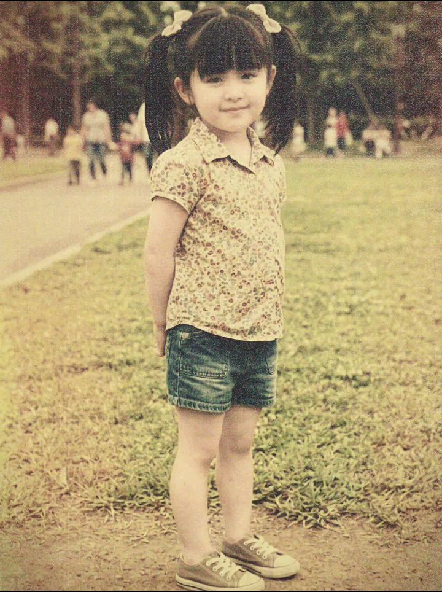
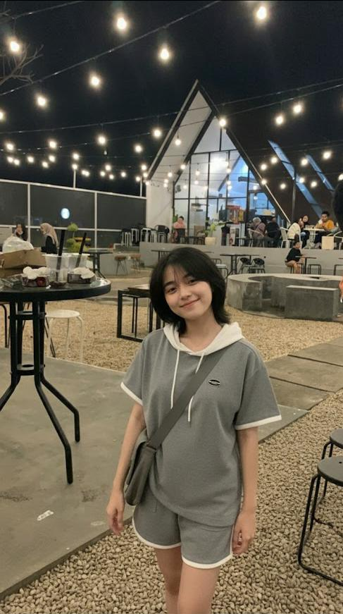

Chapter 01
Masa Polos Belum Kenal kehidupan dewasa / Throwback Zaman Bocil
Klik buat baca ceritanya ✨

Chapter 02
Mode Anak Senja / Nongkrong Santai
Klik buat baca ceritanya ✨
Chapter 03
OOTD Era Maskeran / Estetik Tipis-Tipis
Klik buat baca ceritanya ✨